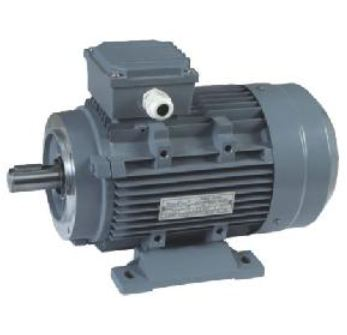

Induction motor is also called asynchronous motor as it runs at a speed other than the synchronous speed. Like any other electrical motor, induction motor have two main parts namely rotor and stator.

Three Phase Induction Motor
Stator
As its name indicate stator is a stationary part of induction motor. A three phase supply is given to the stator of induction motor.
Rotor
The rotor is a rotating part of induction motor. The rotor is connected to the mechanical load through the shaft. The rotor of the three phase induction motor are further classified as-
- Squirrel cage rotor,
- Slip ring rotor or wound rotor or phase wound rotor.
Depending upon the type of rotor used the three phase induction motor are classified as-
- Squirrel cage induction motor
- Slip ring induction motor or wound induction motor or phase wound induction motor
The construction of stator for both the kind of three phase induction motor remains the same and is discussed in brief in next paragraph.
Stator of three phase induction motor
The stator of the three phase induction motor consists of three main parts:
- Stator frame
- Stator core
- Stator winding or field winding
- Stator frame : It is the outer most part of the three phase induction motor. Its main function is to support the stator core and the field winding. It acts as a covering and provide protection and mechanical strength to all the inner parts of the machine. The frame is either made up of die cast or fabricated steel. The frame of three phase induction motor should be very strong and rigid as the air gap length of three phase induction motor is very small, otherwise rotor will not remain concentric with stator which will give rise to unbalanced magnetic pull.
- Stator core : The main function of the stator core is to carry alternating flux. In order to reduce the eddy current losses the stator core is laminated. This laminated type of structure are made up of stamping which is about 0.4 to 0.5 mm thick. All the stamping are stamped together to form stator core, which is then housed in stator frame. The stamping are generally made up of silicon steel, which reduces the hysteresis loss.
- Stator winding or field winding : The slots on the periphery of stator core of the three phase induction motor carries three phase windings. This three phase winding is supplied by three phase ac supply. The three phases of the winding are connected either in star or delta depending upon which type of starting method is used. The squirrel cage motor is mostly started by star – delta stater and hence the stator of squirrel cage motor are delta connected. The slip ring three phase induction motor are started by inserting resistances so, the stator winding can be connected either in star or delta. The winding wound on the stator of three phase induction motor is also called field winding and when this winding is excited by three phase ac supply it produces rotating magnetic field.
 by
by